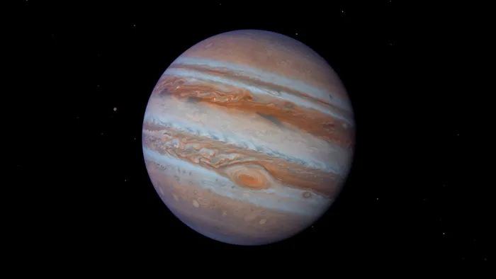
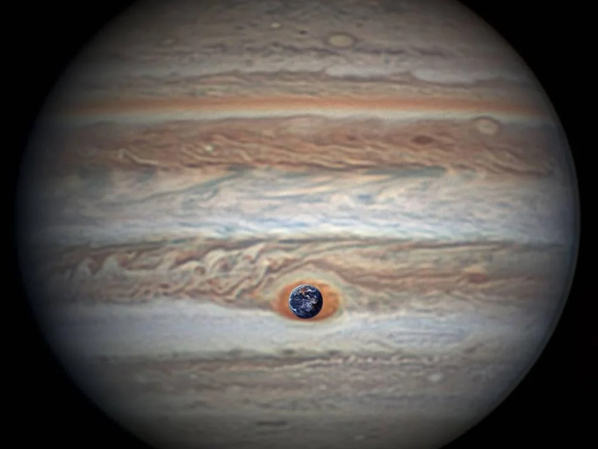

Júpiter é o maior planeta do Sistema Solar e o quinto a partir do Sol.

A Grande Mancha Vermelha é uma tempestade atmosférica gigantesca e persistente.

Júpiter é um gigante gasoso composto principalmente por hidrogênio e hélio. Seu dia dura cerca de 10 horas, sua atmosfera tem faixas e tempestades intensas, e sua magnetosfera é a mais forte entre os planetas. Ele possui dezenas de luas, incluindo Ganimedes, a maior lua do Sistema Solar, e Europa, que pode abrigar um oceano sob o gelo.